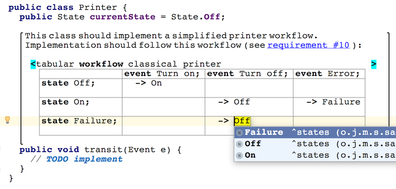

The generic placeholder can be used as a container for comments. The jetbrains.mps.lang.text language as well as the general-purpose devkit provide a simple fully editable multi-line text language with support for basic styling (bold, italic and underlined), clickable hyper-links and embedded nodes (code). Just type the "[" symbol when positioned on a generic placeholder to start entering the text for your comment.
